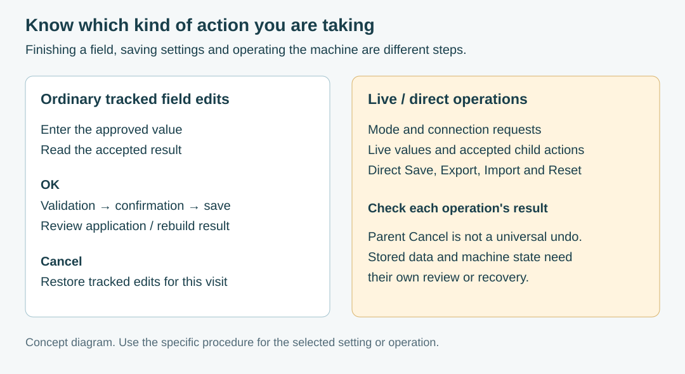

RADONIX · ROUTERXYZAC+TC · CHAPTER 21
Operator Manual · English · 9 October 2026
Using the Configuration Window
Find the correct setting, understand what changing it will do, enter an approved value and verify the result before returning to machine operation.
Expanded draft for review. This chapter teaches the window and its editing workflow. The approved machine setup determines the correct parameter values. It does not require an operator to design machine settings or write control programs.
21.1 Decide what you need to inspect or change before opening Configuration
The Configuration window brings together values that describe the machine, its operating preferences and parts of its control configuration. Some entries are everyday preferences. Others determine movement, tool handling, signal assignments or how a program is prepared. Their presence in the same window does not mean that they carry the same responsibility or take effect in the same way.
Begin with a specific task: inspect a value, enter an approved replacement or perform an authorized configuration operation. If you are asked to change a setting, obtain its complete location, current expected value, replacement value and reason for the change. “Increase the speed” is not an adequate instruction when several different speed settings exist.
Inspection and editing are different tasks
| Task | What to do | What to establish first |
|---|---|---|
| Read a setting | Navigate to the correct group and inspect its value and description. | The full group and item identity. |
| Change an ordinary value | Enter the approved replacement and review its accepted display. | Units, permitted use and whether acceptance affects a prepared job. |
| Use a live value or command | Follow that operation's specific procedure. | When the effect occurs and what Cancel cannot reverse. |
| Work with control-program source | Use the separate authorized source-editing workflow. | The purpose and approval of the change. |
| Import, reset or directly save settings | Use a controlled setup procedure with a known scope. | Which values and stored records will be affected. |
For inspection alone, avoid typing in value cells or choosing commands from a context menu. Expanding a group and selecting an item are navigation actions. Editing its value, accepting a list choice or choosing Reset is a different action with a possible effect.
Prepare the machine and the information
Settle machine activity before a planned settings change. The application blocks Configuration entry in conditions such as a busy controller, program loading or a connection transition. Additional checks apply to particular fields and to final acceptance. A window opening successfully is not a general statement that every setting may now be changed.
If a job is paused or partly complete, retain its status and planned recovery. Some accepted motion-setting changes require the prepared program to be rebuilt and its progress reconsidered. Do not enter Configuration with the assumption that the old continuation point will remain valid regardless of what you change.
Record the approved starting value before editing. Include the whole path through the groups, not only a short label such as Speed, Enabled or Position. Similar labels can occur under different axes, tools or equipment. A correct number entered in the wrong group is still an incorrect setup.
Example: an instruction refers to an axis speed
The operator finds several speed-related values. Instead of choosing the first plausible one, the operator checks the specified axis, group and exact item. If those details were not supplied, the responsible person must identify the intended setting before the value is changed.
This chapter explains how to operate the window. The following settings-reference chapter will describe the groups and their purposes in more detail. Passwords, dated locks, keyboard shortcuts and control-program editing also have dedicated chapters; access to their controls is not a request to explore them during an unrelated adjustment.
21.3 Understand read-only values, disabled controls and access prompts
A visible field is not necessarily editable. Some values are information supplied by the controller. Others are editable only with the appropriate access level or when the machine is in a suitable state. These conditions can also affect which groups are visible.
If a row cannot be edited, first determine whether it is a reading, an access restriction or a temporary operating restriction. Do not assume the window is broken, and do not try another editor or shortcut to bypass the condition.
Access and machine readiness are separate checks
| Situation | Meaning | Appropriate response |
|---|---|---|
| Read-only information | The value is intended to be observed, not entered here. | Use it as information and identify the proper operation if a change is needed. |
| Insufficient access | The current authenticated permission does not allow the edit. | Have the authorized person perform or authorize the task through the normal access procedure. |
| Machine-state restriction | Connection, motion or another operation prevents the change. | Resolve that state before trying again. |
| Unavailable toolbar action | The action may lack permission, required equipment or an application binding. | Read the action's purpose and prerequisites. |
| Hidden entry | The present view does not expose that item. | Check the approved path and current access; do not invent a replacement field. |
The application may request Operator access at startup and Engineering access when entering Configuration, depending on the configured accounts. Successful local access checks remain valid for the application session, including later Configuration visits and reconnects. Closing Configuration does not by itself end the authenticated session.
A cancelled or unsuccessful prompt does not grant the requested permission. The window may still allow inspection at the existing permission level. Do not interpret its appearance as confirmation that the higher-level access check succeeded.
Read a status before acting on it
Descriptions and state messages can explain a setting problem. Read the wording, including the affected group. If a field changes appearance after connection or another state change, recheck its availability before editing. The application refreshes editing access rather than assuming the conditions at window opening remain valid forever.
The Configuration toolbar has its own access rules. Its Connect and Disconnect actions require Engineering access even though connection may be available through the main operating interface under different conditions. Time Lock additionally requires an available authenticated physical board. A disabled board-related action in Simulation is not proof that the Configuration window is malfunctioning.
Example: the machine identifier cannot be typed over
A controller information field shows a value but has no editable input. The operator should read and record it when needed. Changing a nearby text field does not change the physical identity represented by that reading.
Keep access problems separate from value problems. An authorized user can still enter an unsuitable number, and an accepted numeric format does not establish permission to use it on the machine. Both the authority for the change and the correct replacement value must be known.
When reporting an unavailable field, include its full group path, the current connection and activity state, and whether the required access prompt was completed. Do not include passwords in the report. These observations help distinguish a normal restriction from a configuration or application problem.
21.4 Edit one text or numeric value and verify what was accepted
Select the exact property row, then activate its value cell. Before typing, read the existing value and the explanation for that item. Confirm whether the field expects plain text, a whole number or a decimal number. A time, distance, speed and percentage can all look like numbers while having very different meanings.
Make one approved change at a time. Replace the intended text carefully and inspect the whole resulting value, including a minus sign and decimal separator where applicable. Do not append units, explanatory notes or a copied label unless the field specifically expects them.
Use a complete edit-and-check sequence
- Record the original. Note the full group path, value and unit before editing.
- Enter the approved replacement. Ensure the selection covers the intended old value and does not leave an extra digit behind.
- Finish the cell edit. Use the native editor's normal acceptance action, such as Enter while the value cell is being edited, or move to another row when the editor permits validation.
- Read the resulting display. Confirm the value the application actually retained, rather than assuming your keystrokes were accepted unchanged.
- Read any message or confirmation. Resolve it before making another change.
- Keep the window decision separate. A completed cell edit is not the same as completing the entire Configuration session with OK.
| Mistake | What to inspect | Response |
|---|---|---|
| An extra digit remains | The complete value after replacement. | Correct the selection and re-enter the approved value. |
| Decimal or sign is wrong | The exact sign and decimal position in the accepted display. | Restore the intended value before leaving the row. |
| The unit was misunderstood | The field description and approved setup instruction. | Resolve the unit before converting or entering a number. |
| The value does not remain as typed | Validation feedback, range and current retained value. | Investigate the rule; do not repeatedly enter nearby guesses. |
| Text copied from a document includes extras | Spaces, quotation marks, line breaks or descriptive wording. | Use only the intended field content. |
The setting's own conversion and validation rules determine what can be retained. Numeric values can be limited to the configured minimum or maximum, and some entries have a defined list of values. The absence of a popup does not establish that the requested value was accepted exactly as entered. Reading the resulting display is part of the operation.
Keyboard behavior depends on which control currently has focus. Enter in a value editor can complete that cell edit; the dialog also has OK as its default button. Likewise, Escape can belong to an active native editor or to dialog cancellation. Use the labelled OK and Cancel buttons when you intend to finish the whole window, and inspect the state after any keyboard action.
Example: a number looks correct while it is still being typed
The operator enters a replacement but has not left the value cell. At that point, the text visible inside the editor is not sufficient evidence of the final accepted value. Complete the edit, read the resulting row and handle any message before continuing.
For a simple text field, preserve spelling and punctuation required by its purpose. Do not rename an identifier or rewrite a technical value merely to make it easier to read. If the approved task concerns only a display preference, avoid changing nearby machine parameters during the same visit.
Before pressing OK, compare every intended change with the original instruction. Keep this list short enough to review accurately. The Configuration window is easier to use reliably when each visit has a defined purpose and a clear end condition.
21.5 Use choices, on/off values and specialized editors correctly
Some settings offer a list instead of unrestricted typing. Open the list, read the available choices and select the exact approved item. The list can represent a mode, named option, signal assignment or preset value. A choice being available does not mean it is appropriate for every machine or every operation.
Some lists allow only their published choices; others can also accept a typed value. Follow the behavior and description of the particular field. Do not assume that every dropdown is a free-text box, or that every displayed label is the raw number used internally.
Read the meaning of an on/off choice
A two-state setting can appear as True/False or as descriptive choices. Read the field name together with its current value. Enabling a configured feature is not the same as observing that a physical output is energized. Likewise, an Enabled field can determine whether a configuration is used, rather than operating the equipment immediately.
| Editor | How to approach it | Do not assume |
|---|---|---|
| Choice list | Select the named approved option and verify the retained selection. | That a plausible neighboring option has the same meaning. |
| On/off value | Read the full label and description before changing state. | That every such field directly starts or stops equipment. |
| Related property rows | Review all values required by the approved change as a coherent set. | That one valid row makes the entire setup consistent. |
| Shortcut editor | Use its assignment controls and resolve conflicts. | That typing a combination into an unrelated text field assigns it. |
| Control-source editor | Follow the dedicated authorized source workflow. | That it behaves like a harmless descriptive note. |
Grouped settings need a grouped review
Several rows can describe one item, such as a tool station or a set of motion parameters. Verify the whole approved group after an edit. A correct individual coordinate can still combine with the wrong neighboring coordinate or belong to a different tool station.
Do not fill missing values by copying them from another component without an approved instruction. Similar equipment names do not guarantee identical mounting, travel or timing. Where an instruction changes more than one row, keep a written list and check each accepted result before OK.
Recognize when the right-hand panel changes function
Selecting certain tree entries opens a specialized editor rather than the ordinary property table. A keyboard shortcut has its own capture and commit controls. A control-program source entry opens a code editor and can display diagnostics as its text changes.
For an operator, the important distinction is the purpose of that editor. Source text controls machine behavior; it is not a comment field to be rewritten for clarity. This chapter does not teach PLC programming. Use the later dedicated chapter for viewing or making an explicitly approved source correction.
Changes in the code editor update the settings source while validation is scheduled. The Configuration OK action flushes pending source validation before its broader checks. Nevertheless, closing Configuration successfully must not be interpreted as proof that every control program has compiled, been loaded and performed a successful physical operation. Those are separate outcomes that need their own review.
Example: selecting a program opens a large text area
The operator intended to inspect a setting and unexpectedly sees control-language text. The correct response is to recognize the different editor and return to the intended group without typing. There is no need to understand or change that text to complete an unrelated ordinary value adjustment.
For any unfamiliar editor, identify its own action buttons and the effect of committing before entering data. A consistent window appearance does not make every editing workflow identical.
21.6 Recognize toolbar operations and their immediate effects
The top toolbar uses icons with tooltips. Pause the pointer over an icon to read its action before clicking. These controls do not all edit the currently selected property. Some request a controller operation; others open a separate dialog with its own acceptance and persistence rules.
In the reviewed Router application, Connect and Disconnect are bound to controller commands. The Configuration toolbar's Import Configuration and Export Configuration positions are present but no application commands are bound to them, so they remain disabled. Group-level import and export exist separately in the right-click menu, described in the next section.
| Action | Purpose and availability | Relationship to parent Cancel |
|---|---|---|
| Connect / Disconnect | Request the corresponding controller operation; Engineering access and command readiness are required. | Cancel does not reverse a completed connection operation. |
| Import Configuration / Export Configuration | Toolbar slots remain disabled in the reviewed application composition. | Do not confuse them with the active group context-menu commands. |
| Change Password | Open account management; its own credentials and rules apply. | An accepted password change has its own persistence. |
| Time Lock | Open dated locks and board information with the required access and authenticated physical board. | Completed board actions are not undone by parent Cancel. |
| Translations | Open the interface-text editor when configured and Operator access is available. | Applied translations remain accepted if Configuration is cancelled. |
A command is not a pending property edit
Requesting Connect or Disconnect affects the controller session. Read the connection result and current machine state after the request. Do not click these icons as a way to save ordinary changes or close the window. Their names describe operations, not alternatives to OK.
Controller Mode is another immediate operation even though it appears as a property. Changing it requests a reconnect into the selected mode. As explained in Chapter 20, Configuration Cancel does not restore the previous mode or connection.
Auxiliary dialogs have their own completion actions
Use the password and time-lock chapters for their detailed procedures. Here, the important point is that closing the parent window is not a universal undo. Once an account or board operation succeeds, its result must be handled through that operation's own procedure.
The Time Lock window also contains board date/time, runtime and identification information. Those readings do not appear as a separate board-information panel in the main Configuration window. A failed or unavailable board reading should not be interpreted as a zero value.
The Translations editor changes interface wording. It shows original English text and a selected language's editable translation. Selecting a language there chooses which translations you are editing; it does not itself change the application's active language. Apply validates and accepts the translations, while cancelling the translation editor discards unapplied drafts. Applied translations survive cancellation of the parent Configuration window.
Example: a wording change was applied in Translations
The operator applies an approved translation and then cancels an unrelated machine-setting draft in the parent window. The wording change remains accepted. Parent cancellation should not be used as a test of whether the translation was saved.
For an ordinary approved parameter adjustment, you usually do not need these auxiliary operations. Keep the scope of the visit clear. If you use an immediate action, add its result to your change record separately from the values you plan to accept with OK.
21.8 Review validation and program-rebuild prompts before accepting
Before OK, review the complete list of intended changes and finish the active field edit. Confirm that the accepted values match the approved instruction. Also identify any immediate actions already performed, because those are not merely waiting for final acceptance.
OK starts the Configuration acceptance process. Pending source validation is completed, the application's settings checks run and any required acceptance confirmation is evaluated. Only after these steps permit acceptance does the dialog save the settings. A validation message or declined confirmation can leave the window open for correction or Cancel.
Handle an error at its actual location
If the whole-settings checks fail, the dialog attempts to select the first tree item carrying an error and displays a message. Read the selected group and explanation. The cause may be a relationship between values, a shortcut conflict or another configuration condition, rather than the field most recently touched.
Do not change unrelated values until the warning disappears. Compare the reported condition with the approved setup, then correct or cancel the relevant edits. If the meaning is unfamiliar, keep the message and the field path for the responsible person.
| Outcome | Meaning | Next step |
|---|---|---|
| Field value is adjusted or rejected | The field's own rules did not retain the requested input unchanged. | Read the accepted value and resolve the discrepancy. |
| Whole-settings validation fails | The candidate configuration did not pass the application's checks. | Inspect the indicated problem before retrying OK. |
| Program-progress reset confirmation | An affected setting can require rebuilding the prepared path. | Decide whether losing the previous continuation state is intended. |
| Machine is not ready to apply | The required idle and operation conditions are not satisfied. | Resolve the current activity through its normal controls. |
| Save fails | Persistence did not complete successfully. | Keep the message and establish the actual stored and current values. |
| OK succeeds | Configuration were accepted and saved; the application applies relevant changed settings. | Review any resulting program rebuild and machine readiness. |
Understand why a parameter change can affect the prepared job
The reviewed application treats axis settings, coordinated-motion settings and the general traverse velocity as changes that can require a path rebuild. If the prepared program has progress, a warning can ask whether that progress may be reset. This is a decision about the job's continuation, not merely a request to acknowledge that a number changed.
The confirmation can appear after a field edit and can be checked again at final acceptance when required. Declining the field-level confirmation restores that edit's preceding value. Declining final acceptance keeps the dialog open. Read the actual result instead of assuming both decisions close the window.
If a rebuild is accepted, inspect the resulting prepared program and establish the intended next start again. Do not treat the old paused position or selected entry as an automatic recovery plan. Use the program review and selected-start procedures in Chapter 15 and Chapter 18.
A prepared-program progress warning
Capture the delivered confirmation for an approved deferred motion-setting change in a controlled Simulation exercise. Show the affected field and readable warning. Label the consequences of accepting or declining. Do not create an interrupted physical machining job solely to obtain the image.
Suggested asset: assets/images/21-progress-reset-warning.png.
Saved does not mean physically verified
Successful OK does not qualify the physical machine or prove that all control programs are compiled and running correctly. Some controller settings have their own application or reconnection requirements. Read the setting's specific procedure and the resulting status before using the machine.
If persistence fails, the dialog reports the error and remains open. Do not assume that all storage writes were undone. Record the message, retain the intended change list and resolve the storage problem before treating the setup as reliably saved.
Example: a paused job and a motion-setting correction
The operator is asked to change an approved motion value but intends to continue the old cut immediately afterwards. A progress-reset warning means that intention needs review. Accepting the warning without considering the partly machined workpiece is not a routine part of entering the number.
After acceptance, inspect the relevant values and status in the main application. A visit that changed only a display preference should not be treated as a reason to redo unrelated machine settings. Review the consequences of the changes actually made.
21.9 Cancel ordinary edits without assuming a universal rollback
Cancel is useful when you decide not to accept the ordinary edits made during the current Configuration visit. The dialog keeps track of changes committed through its property, source and shortcut editors. For tracked values, it restores the recorded value from before the first edit of that item during the visit.
If you change the same ordinary field several times, cancellation is not just one Undo step to the immediately preceding number. It uses the value recorded before those edits. Closing the window without a successful OK also follows its cancellation-restoration path.
Know the limits before relying on Cancel
| Kind of change | Expected cancellation behavior |
|---|---|
| Ordinary tracked field edits | Restore the value recorded before the first tracked edit of that item in this visit. |
| Controller Mode | Excluded from restoration; the live mode operation is not reversed. |
| Live machine-control values | Excluded live values are left at their current state. |
| Updates originating outside the editor | Cancel does not restore a complete snapshot of every value that existed at window opening. |
| Accepted auxiliary operations | Password, board and applied translation actions retain their own results. |
| Direct context-menu storage or reset operations | Do not rely on the ordinary edit journal to reverse these operations or their stored effects. |
| Window layout and tree position | Presentation state can be retained even when setting edits are cancelled. |

This distinction matters because Configuration is connected to the current application, not a detached photograph of all machine values. Live readings and outside updates can occur while the window is open. Cancellation deliberately does not rewind the whole controller to its opening state.
Inspect the result after cancelling
For an ordinary approved practice edit, reopen the same group and verify the restored value. If any immediate operation was performed, check its actual current result separately. For example, after a Mode change, inspect the active connection rather than assuming that Cancel returned the former session.
If you directly saved or exported a group after editing, storage may already contain the edited values. Cancel may restore a tracked current value without proving that every stored record now matches it. Resolve this through an intentional reviewed save or the approved recovery process, rather than relying on a later application exit to make the situation clear.
Example: a display preference and a connection command
During one visit, an operator changes an ordinary preference and requests a controller disconnect. Cancelling the settings draft can restore the tracked preference. It does not reconnect the controller. Each result must be understood according to the action that produced it.
Window layout can also be saved during closing. If a window-state persistence error appears, the form can remain open even after a cancellation request. Read that message separately from a machine-settings validation error. Do not conclude that the old edited values are still active solely because the window did not disappear.
Cancel cannot undo physical movement, remove material already cut or restore a file edited through another workflow. If an unintended action has affected the machine or stored configuration, follow the relevant recovery procedure and record the outcome. Use Cancel for its defined editing role, not as an emergency or recovery command.
Changing I/O mappings
Mapping edits require Offline or Failed, no PLC Apply in progress, and every ToolPath empty. Merely stopping or disconnecting does not clear prepared programs. Use Clear Tool Path for TP0; retained auxiliary paths must also be cleared. These restrictions apply to the target, Enabled and input Filter Mode. Review validation before connecting again.
I/O monitor layout and names
The monitor uses the same readable signal captions as Configuration. Internal PLC identifiers and physical addresses remain unchanged. Hover over a shortened label to see the full name and address. In PLC Memory, numeric indices are raw memory addresses, not signal names.
Place the pointer in the narrow invisible gap immediately to the right of the first module panel. The horizontal resize cursor identifies the grip. Drag to resize all panels together from 75% to 200% of their default width. It works with any first module and with a single panel. Heights stay fixed; wider content uses horizontal scrolling.
With Save Window Layout enabled (default), closing the monitor saves its placement and shared panel-width percentage for the next opening or session. With the option disabled, saved layout is neither restored nor overwritten. The percentage is independent of display DPI. Diagnostic windows do not offer a minimize button.
21.10 Practise an ordinary edit and complete a change record
For a first exercise, ask the trainer to choose a reversible display preference that uses the ordinary Configuration editing workflow. The trainer should identify its exact path, original value, replacement and expected visible result. Do not use an axis limit, tool position, signal mapping, live value or control-program source as a first editing exercise.
The purpose is to practise navigation, value entry, cancellation and acceptance. You do not need to connect the physical machine or issue movement commands to demonstrate those skills. Use the shop's approved training arrangement and keep machine activity settled.
Practise cancellation first
- Locate the field. Open Configuration and navigate from the main group to the specified item. Read its description aloud in ordinary language.
- Record the original. Note the full path and accepted starting value.
- Make the approved edit. Change only this field, finish its cell edit and inspect the resulting value.
- Cancel the visit. Use the labelled Cancel button. Do not use direct Save, Export, Import, Reset or an auxiliary action during this exercise.
- Reopen and compare. Return to the same field and verify that the original tracked value was restored.
Then practise acceptance and verification
Repeat the same approved edit, this time finishing with OK. Read any message rather than dismissing it automatically. After successful acceptance, reopen the field and verify the retained value, then check the expected display effect. Return the preference to its approved final value if the training plan requires that.
This exercise should not produce a program-progress reset warning when it is limited to a suitable display preference. If a warning appears that you did not expect, stop and review the selected path and field with the trainer. Do not accept it merely to finish the exercise.
| Record item | What to retain |
|---|---|
| Purpose and approval | The reason for the adjustment and who supplied the approved change. |
| Exact setting | The full group path, item name and units where applicable. |
| Before and after | The original value, requested replacement and actual retained value. |
| Other operations | Any live action, auxiliary Apply, direct save, export, import or reset performed. |
| Messages | Validation, progress-reset, application or persistence messages and the response chosen. |
| Window result | Accepted with OK, cancelled, or left unresolved after an error. |
| Verification | The reopened value, expected effect and any required program or physical setup review. |
This record is a suggested shop procedure, not a claim that Configuration automatically generates a complete change-history document. For multiple approved changes, identify each field separately. A general note saying “settings updated” does not tell another operator which machine behavior may have changed.
Check your understanding before independent use
You should be able to explain why selecting a group is different from resetting it, why a number must be read after acceptance, and why a read-only field does not imply a broken editor. You should also be able to describe the difference between completing a value-cell edit and saving the complete Configuration session.
Finally, explain three cancellation limits: changing Mode is a live operation, accepted auxiliary-dialog actions have their own results, and direct storage commands are not ordinary unsaved drafts. Remember that Export itself saves current group values before producing its file.
When you can perform the exercise and explain those distinctions, continue to the next chapter's settings reference. Use it to understand the purpose of each group while continuing to obtain machine-specific values from the approved setup information.
I/O mapping admission and clearing loaded programs
Target, Enabled and Filter Mode can change only while the controller is Offline or Failed, no PLC Apply is active, and all four ToolPaths are empty. A retained program in any of TP0–TP3 locks these editors; the description explains that loaded programs must be cleared first. The Controller API enforces the same rule before changing mapping values or invalidating PLC compilation.
Use the explicit Configuration toolbar clear command to empty all ToolPaths. It requires Engineering access and idle motion/preparation. Clearing is immediate and cannot be undone by Cancel. Editing mappings never clears or rebuilds a program automatically. After clearing, mappings can be edited and PLC validated without restarting the application.
Documentation basis
Reviewed against source available on 9 October 2026. This review did not operate a live controller or test every native keyboard interaction. Screenshot placeholders require capture from the delivered application.
NT-ConfigurationManager/ConfigurationForm.csNT-ConfigurationManager/ConfigurationForm.Designer.csNT-ConfigurationManager/ConfigurationForm.Toolbar.csNT-ConfigurationManager/ConfigurationForm.Translations.csNT-ConfigurationManager/ConfigurationAccessSession.csNT-ToolsWF/GroupEditor/GroupEditorBinder.csNT-ToolsWF/GroupEditor/GroupPropertyBag.csNT-LinkManager/LinkGroup.csNT-LinkManager/RealLink.csNT-LinkManager/IntegerLink.csNT-ToolsWF/Tools/SEditors/sLinkEditor.csRouterXYZAC+TC/Configuration/GeneralLinks.csRouterXYZAC+TC/Configuration/Controller/ControllerLinks.csRouterXYZAC+TC/MainForm.Runtime.cs